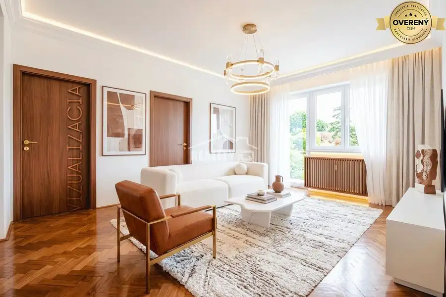
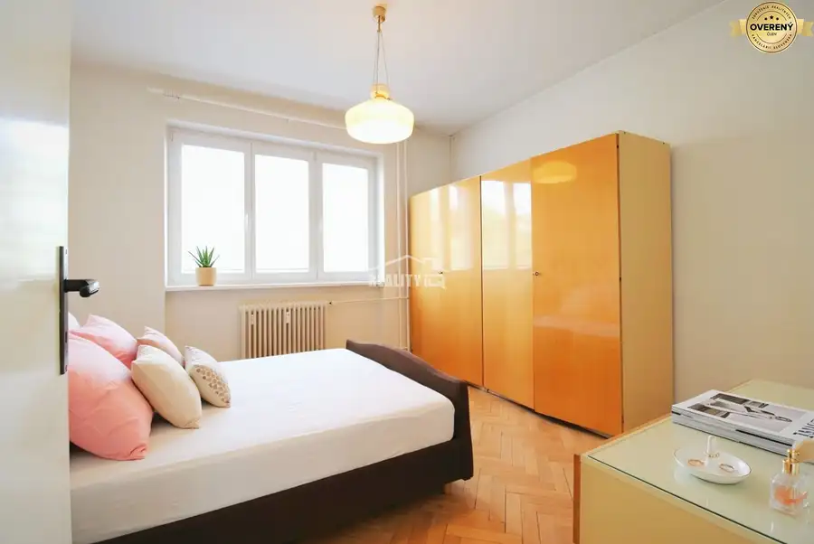
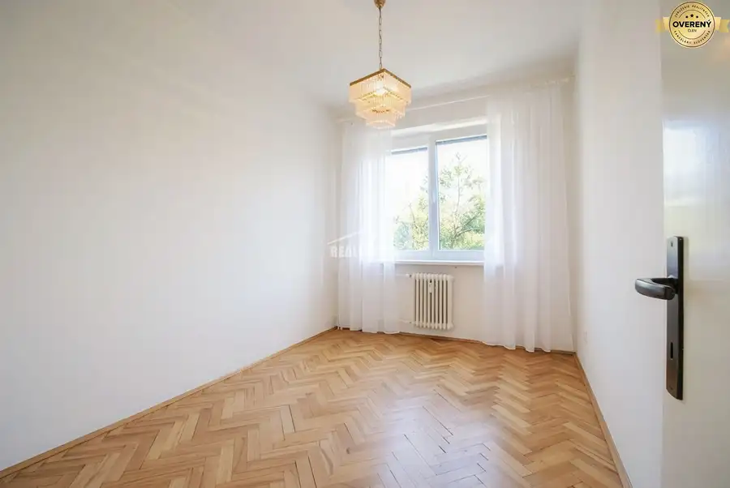
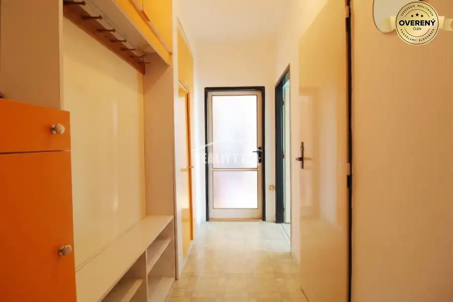
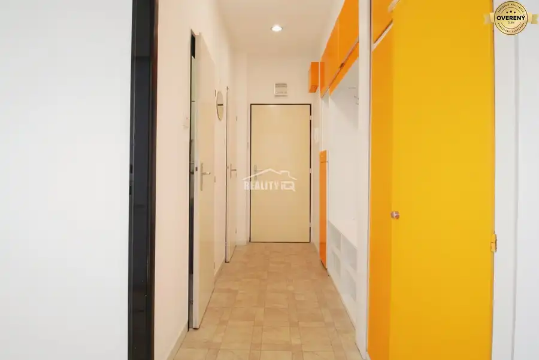

EXKLUZÍVNE: 3-izbový byt v Považskej Bystrici na predaj
Považská Bystrica





- Dispozícia3-izbový
- Plocha58 m²
- Stavpôvodný
- Vlastníctvoosobné
O nehnuteľnosti
Ponúkame vám exkluzívne na predaj 3-izbový byt s výmerou 58 m² v tichej a vyhľadávanej lokalite: Považska Bystrica, ulica I. Krasku. Byt sa nachádza v tehlovej bytovke na 3. poschodí zo 6 a ponúka praktickú dispozíciu, balkón, pivnicu a krásny výhľad.
Byt je v pôvodnom stave, čo novému majiteľovi dáva ideálnu príležitosť prispôsobiť si ho vlastným potrebám. Vďaka svojej dispozícii je vhodný nielen na pohodlné rodinné bývanie, ale aj ako investícia s potenciálom ďalšieho prenájmu.
Dispozíciu bytu tvorí vstupná chodba, samostatné WC, kúpeľňa, kuchyňa, obývacia izba s výstupom na balkón, spálňa a detská izba.
Veľkou výhodou je samotná lokalita. Priamo pred bytovým domom sa nachádza park, k dispozícii je dostatok parkovacích miest a centrum mesta je vzdialené len približne 5 minút. V pešej dostupnosti nájdete služby, obchody a všetko potrebné pre každodenný život.
Byt, ktorý ponúka pokojné bývanie, výbornú dostupnosť a priestor vytvoriť si domov podľa seba.
Pre viac informácií alebo dohodnutie obhliadky nás neváhajte kontaktovať.
Slavomíra Kubeková
Parametre
- Úžitková plocha
- 58 m²
- Poschodie
- vyššie poschodie
- Počet poschodí
- 6
- Počet izieb
- 3
- Vlastníctvo
- osobné
- Stav
- pôvodný
- Status
- aktívne
- Plyn
- áno
- Kúpeľňa
- áno
- Balkón
- áno
- Pivnica
- áno
- Výťah
- áno
- Parkovanie
- vonkajšie
- Postavené z
- tehla
- Zateplený objekt
- nie
- Energetický certifikát
- nie
- Dátum zverejnenia
- 2026-09-10